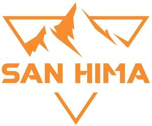

Trade Mark Journal No.2025/041 10 October 2025
WO0000001876967 (7,8,12,22)
Office of origin: Australia
Date of International Registration:3 July 2025
Date of designation in the UK:
3 July 2025

International priority date claimed: 30 June 2025
(Australia)
(2561862)
- Class 7
- Swimming pool vacuum cleaners, and their parts, namely, leaf catchers, flexible vacuum heads, hoses, hose connectors, brushes, wheels, suction heads, filter cartridges, impellers and motors; hoses for swimming pool vacuum cleaners.
- Class 8
- Hand-operated tools and metal integral parts thereof, including linchpins, spring bolt latches, hinge fasteners and lashing tie-down rings; hand tools; garden tools.
- Class 12
- Racks for vehicles for bicycles and motorcycles; automobile roof racks; utility hitch trailers designed for use in transporting luggage, timber, kayaks and canoes; trailer hitches for vehicles and parts thereof, namely, brake override apparatus; antitheft devices for vehicles; vehicle bonnet pins and vehicle hood pins; jockey wheels; vehicle parts, including, grill guards, mud guards, running boards, cargo nets specially adapted for vehicles, stabilizers for caravans, caravan roof vent hatches, pull out steps for caravans, towing mirrors for caravans; fitted covers for caravans; vehicle water tanks being structural parts of campers; collapsible trolley for transport of kayaks and canoes; caravans; trailers; land, air and water vehicles.
- Class 22
- Awnings for tents; bags made of textile for the storage of tents; camping tents; ropes for tents; tents; tents (awnings) for caravans; tents (awnings) for vehicles; tents for camping; tents for mountaineering; tents for use as an adjunct to vehicles; tents made of textile materials; swags (groundsheet and bed-roll cover); covers (not shaped) for barbecues; covers (not shaped) for boats; covers (not shaped) for motor cars; covers (not shaped) for pick-up trucks; covers (not shaped) for vehicles; covers for camouflage; covers for ponds; covers in the nature of tarpaulins for vehicles; retractable textile awnings; vehicle covers (not fitted); waterproof covers (tarpaulins); tie-down straps for securing luggage on vehicles; devices in form of elasticised rope for securing goods on vehicles; devices in form of elasticised rope for supporting goods on vehicles; elastic ropes; elastic straps for handling/securing loads; elasticised ropes; hammocks; coverings in the nature of tarpaulins; plastic sheet materials (tarpaulins); plastics sheet materials for use as tarpaulins; tarpaulins; tarpaulins made from plastics coated materials; waterproof covering sheets (tarpaulins); non-metallic webbing straps for handling loads; straps made of plastic materials for tying purposes; straps made of plastic materials for wrapping purposes; straps made of rubber; straps, not of metal, for handling loads; canvas for sails; fabrics for sails; sails; sails for boats; sails for catamarans; sails for kiteboards; sails for sailboards; sails for ski sailing; sails for windsurf boards; sails for windsurfing; sails for yachts; shade sails; sails for ships; bungee ropes; car towing ropes; non-metallic ropes; non-metallic tow ropes; ropes; ropes for mountaineering; ropes for rock climbing; ropes for use in climbing and mountaineering; ropes, not of metal; towing ropes for vehicles, not of metal; shade awnings and canopies, not of metal; shade cloth; blackout blinds (outdoor) of textile; outdoor blinds of textile; sun screens (outdoor), of textile; window blinds (outdoor) of textile; non-metallic binding thread; non-metallic cables; non-metallic hoisting slings for handling loads; non-metallic lashings for binding; non-metallic lifting slings for handling loads; non-metallic ties for binding; non-metallic ties for tying; non-metallic ties for wrapping; non-metallic towing cables; non-metallic twines; non-metallic webbed belts for handling loads; nets for birds; nets for camouflage; nets for protective use in gardening; nets for shading; nets for windbreak purposes; awnings of synthetic materials; awnings of textile; beach awnings and canopies, not of metal; canopies (awnings); market awnings and canopies, not of metal.
VIC OFFROAD PTY LTD
Representative: Davies Collison Cave Pty Ltd, Level 15,, 1 Nicholson Street, MELBOURNE VIC 3000, AUSTRALIA